· · · ····░·░ ·▒·▒░▒░▒▒▒▒░▓▓▓▒▒▓▒▒▒▒▒▓▓▓▒▓▓▓▒▓▓▓▓ · · ··· ░····░··░ ·░░··░▒···▓▓▓▓▒░░▓░▓░▒▓▓▓▒▒▓▓▒▒▓▓▒▓▓ ·· · ·· ·· ░ ·░··▒·░░▒···░·▓░▒░▒▒▓▓▓▓░▒░▓▒▒▓▓▓▓▓▓▓▓ · ·· ···· ░· ····░▒░░▒▒░▓▒▒░▒▒▒░░▓▓▓░▓▒▒▓▓▓▒▓▓▓▒▒▓ · · ···· ░·░·░░ ▒·▒▒·▒▓░░▒▒░▓▒▒▓▓▒▒▓▒░▓▓▓▓▓▓▒▒▓▓ ·░ ░·· ░░░ ░░ ░░·▒▒░·▒▒▓▓░▓▒▒▒░▓▓▓▓▓▓▓▒▓▓▓▓▓▓▒▓▓ · · · ·░·░ ·░▒·░·▒░░░▒▒▒▒·▒▒▒▓▒░▒░░▓▒▒▓▒▓▓▓▓▓▓▓▓ · ··· ·· ·░·░ ░░░·░░▒░░░··░░▒▒░▒▒░▓▓░▒▓▓▓▒▒▓▓▓▓▓▓▓▓▓▓ · · · · ···░ ·░·░░·░▒·▒▒▒··░▓▓▒▒▒░▓▓▒▒▓▒▒▒▓▓▓▓▒▓▓▓▓▓ · · · ░░ ░· ··░░ ·░▒▒░▒▒▒░░▒░▓▒▒░░▓▓▒▓▓▓▓▓▓▓▓▓▓▓ ·· ··· · ···· ░ ░▒░·░░ ·▒·░▒░·░▒·░▓▒▓▒▓▒▒▓▓▒▓▒▓▓▓▒▓▓▓▓▓ · · ·· ··· ░·░·░░·░·░░··▒░▒░░▒▒·▒░░▒░▓▓▒▓▒░▓▒▓▒▓▓▓▓▒▓▓ · ·· ·░··░ ·· ·░░·▒░·▒··▒░▒░░░░▓▒▓▒░▒▓▓▓▓▒▒▓▓▓▓▓▓▓▓ · · ·· ░ · ·· ·░·▒▒░░▒░▓▓░░▒▓▓░▓▓▓▓▓▒▓▓▒▓▓▓▒▒▓▓▒▓▓ · · · · · ·· ·· ░ ···░▒░··▒░·▒▓░▒▓░░▓▒▓▒▓▒▒▓▓▓▓▓▓▓▓▓▓▓ · · ··· ░ ···░▒ ▒░░░▒▒··▒▒▓·▒▒▓░▒▓▒▓▒▓▓▓▒▓▓▓▓▓▓▓▓▓▓ · ··· · ·· ··░░··▒░▒▒··········░░░▓▒░▓░▓▓▒▒▓▓▓▓▓▓▓▒▓▓ · · ··░·░░ ░░ ·░▒ ░ ▒▒▒▒░░▒▓▒··▒▒▓░▒▓▒▒▓▓▒▓▒▒▓▓▒▓▓▓▓ · · · · ····░· ░·░░░ ░▒·░·▒░···░▒▒▒▒▒░▓▒▓▒▓▒▓▒▓▓▓▓▓▓▓▓ · · ·· · ··░ ··· ░░· ·░░····░·▒·░▓░░▒▒░▓▒▓▓▓▓▓▓▓▓▓▓▓▓▒▓▓ ·· · ░· ·░··░░·▒▒▒▒░·▒░··░▒▒·▒░▓░▓▒▓▒▓▓▓▓▓▒▓▓▓▓▓▓▓ · ··· · ·· · ·░·░·░▒▒▒·░▒▒·▒▒▒░▒▒░▒▒▓▓▓▓▓░░▓▓▓▓▓▓▓▓▓▓▓ · ·· ·░ ·░ ░░░░ ··░░░·░░░▓▒▒·░▒░▓░▓▓▒▒▒▓▒░▓▒▓▓▒▓▓▓▓▓ · · · · · ···░ · ░·░·░░░░░░▒▓·▓▒▓▓░▒▒▒▒▓░▓▓▓▓▒▒▓▒▓▓▓▓▓▓ ··· · ·░··░·░ ▒ ░░░░░░▒░░▒▒▒·▒░▓▒▓▓░▓▒▓▒▓▓▒▓▓▒▒▓▓▓▒▓ · ·░░·░ · ░ ·▒▒▒░▒░▒░▒·▓▒▒▓▓▓▓▓░░▓▓▓▒▓▓▓▒▓▒▒▓▓▓ · · ░ ░░ ·░░▒░░·░·▒▒··░░▒░▓▓░▒░░░▓▒▓▒▒▒▒▓▓▓▓▓▒▓▓▓▓ · · ░ ··· ░····▒··░▒···░░░▓▓░▒▒░▒▒▓▒▒▒▒▒▓▒▒▓▓▓▓▓▓▒ · ·· · ░ ··░·░░·▒··░ ░░▒▒░▒░░▒░░░▓▓▓▓▒░░▒░▓▒▒▓▒▓▒▓▓▒▓▓ ··· · · ·░ ░···░░·▒░▒▒░░░▒░░▒▒░▓░░▓▒▒▓▓░░▓▓▓▓▓▓▒▓▓▓▓ · · · · ░··░░ ·░·░·░░░▒░░▓▓▓▒▓░▒▒▓▒▒▓▒▓▒▒▒▓▓▒▓▓▓▓▓
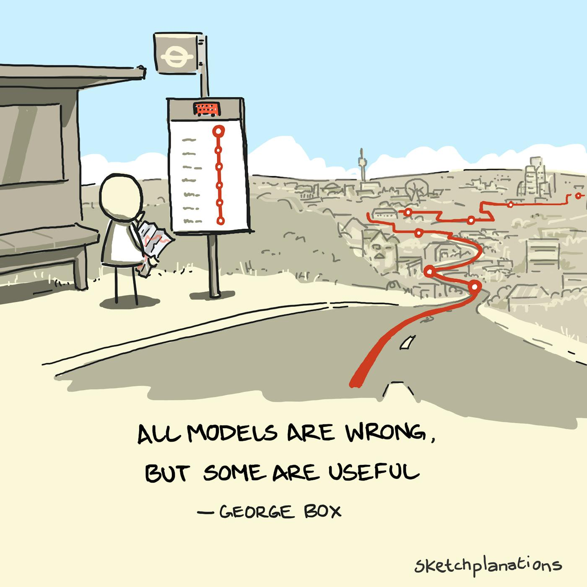
whoami
mpedersen
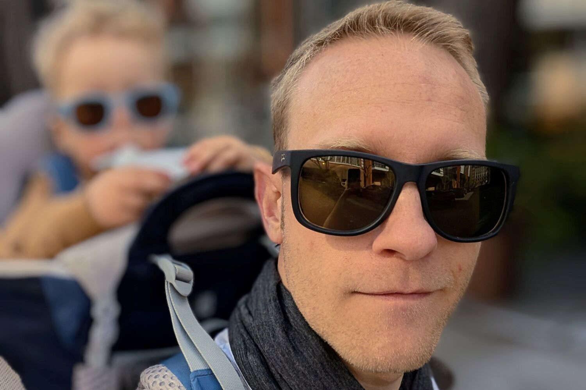
Opinions are my own, not those of my employer.
Start small and build up: learn to walk, then run, then scale.
Functions describe the world · Pato Molina ↗
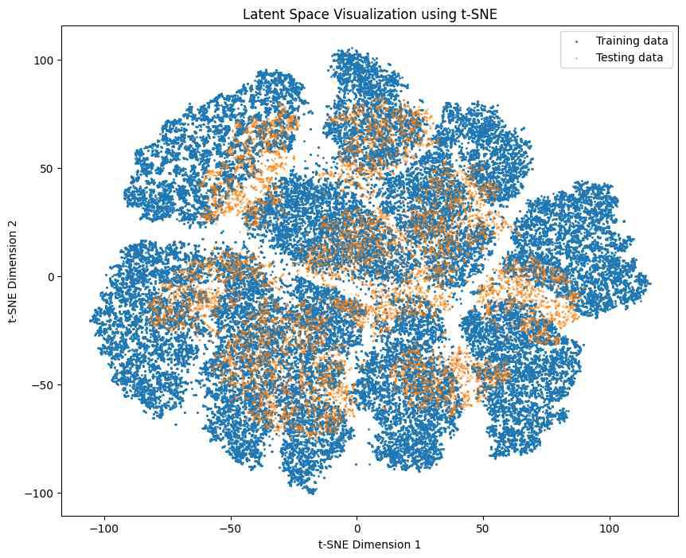
Latent space, t-SNE · Source: GeeksforGeeks
Composition: greater than the sum of its parts. Lego bricks compose; a moulded toy does not.
You’re talking with ./humanity.exe. Be specific about role, context and intent.
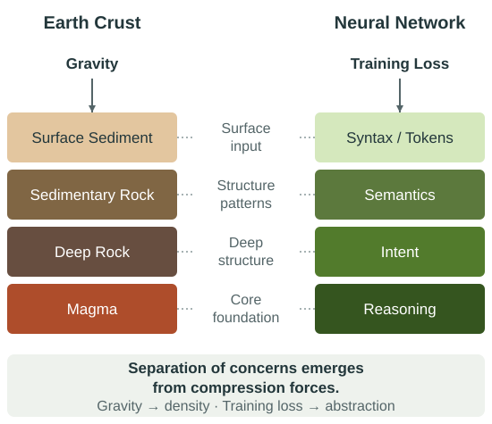
Curate the context: you are rolling dice within that distribution.
“Give Claude a way to verify its work… it will 2-3x the quality of the final result.”Boris Cherny
The calculator principle: deterministic work goes to deterministic tools.
Exploration is expensive.Distillation is cheap.Keep context clean.
One task per context window. Rewind, don’t correct.
PRD = destination · design = vehicle · plan = route map
Agents have focus and bias; skills are objective and transferable.
Program the LLM’s behaviour with standards and conventions stored in your repo.after Geoffrey Huntley
If a human is in the inner loop, you will be overloaded.
Track hypotheses with hyp: a criterion and evidence for every suspicion · github.com/eisbaw/hyp
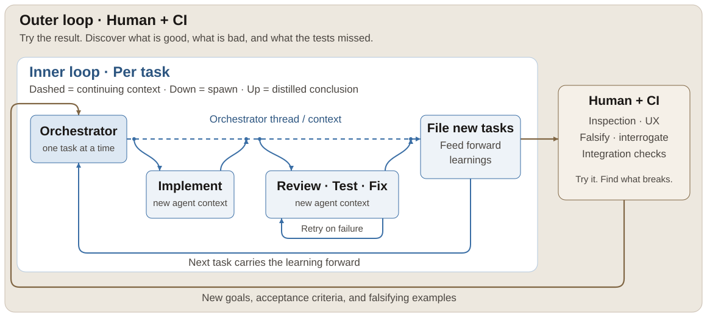
A wrong arrow in a figure is spotted in seconds, by human and by AI.
AI scales the good and the bad; bottlenecks become clear.
git revert
nix develop
just test
cargo clippy
backlog task list
hyp init
Tool friction divides quality: give agents CLIs that fail loudly.
“Removing waste from your organization and processes is a bigger accelerator than AI itself.”Geoffrey Huntley
Be ambitious about what you attempt, conservative about what you trust.after Dan Luu
Cheap code makes its complements dear: verification, judgement, taste, trust.
A subset of private hobby projects, from the last year.
AI proposes the order, people decide, AI does the bookkeeping.
GACIA: GitLab Autonomous Code Improvement Agent ↗
The debt nobody schedules is the debt that compounds.
Ask not what AI can do for you, but what you can do for AI.
This deck written in Marp · packaged by Nix · made in concert with Claude, from my notes
Make errors unlikely, recoverable and confined.
The terminal character grid: ../tools/cover_grid.py writes it; assets/cc-chrome.js makes it flicker.